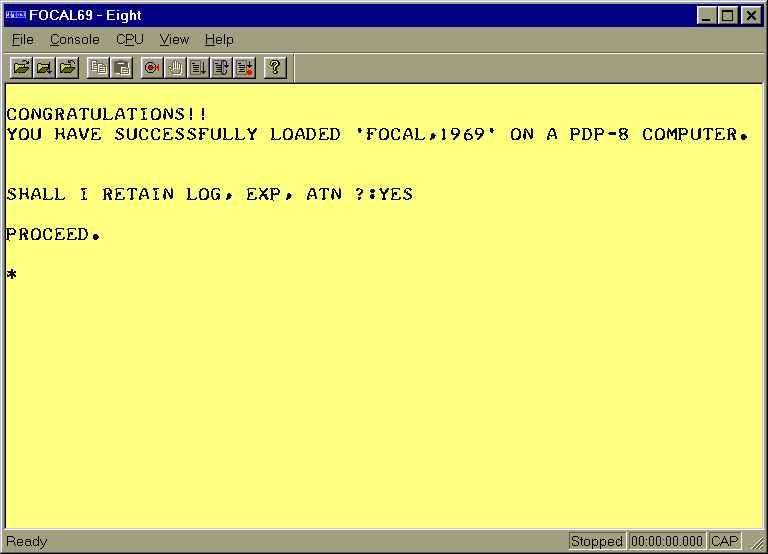
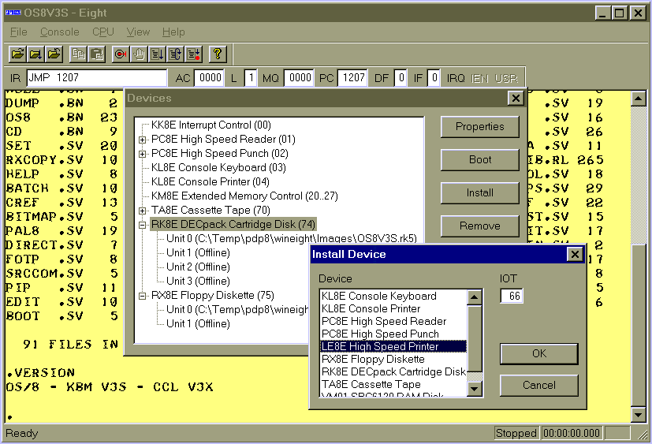

|
|
|
WinEight is a software emulator for Digital Equipment Corporations PDP-8 family of computers and is able to run most common PDP-8 software including FOCAL-69 and OS/8. WinEight is a fully native Win32 application for Microsoft Windows NT or 9x and was written using MSVC 6 and MFC, which gives it the look and feel of any standard SDI (single document interface) application. The main window of WinEight is an emulation of an ASR-33 terminal that displays console output from the emulated program and, when this window has the focus, sends keyboard input to the emulated program. The console window keeps a scroll back buffer to allow review of previous output, accepts standard Cut and Paste operations via the Windows clipboard, and can optionally be saved to a log file. Although the console window can be used with any font, fixed or proportional, it looks its best when used with the optional ASR-33 style font shown in these screen shots.
 The main window of WinEight has a standard menu bar with selections for attaching files to emulated devices, controlling the emulated CPU, changing the console font and colors, configuring emulated devices and options, and Windows style help. The main window also supports standard Windows docking tool bars for common emulation controls (HALT, CONTINUE, BOOT, etc) and another one for viewing and changing internal CPU registers (e.g. the AC, PC, MQ, IF, and DF). Lastly, a status bar can be enabled at the bottom of the main window to show recent messages, current emulated CPU state, and elapsed running time. WinEight uses two separate threads one which runs at a high priority for the user interface (the console terminal window, menus, and so on) and a lower priority thread for the PDP-8 emulator "engine" (which is perpetually fetching and executing PDP-8 instructions!). This allows the PDP-8 emulation to run as a "background" task on your PC, soaking up all the free CPU cycles, but not appreciably slowing down the responsiveness of its own UI or other Windows applications. Naturally this works best on Windows NT, which has a real scheduler, but it works passably well on Windows 9x as well. WinEight emulates the KK8/E (i.e. PDP-8/E) CPU as well as the KM8/E memory extension control. CPU emulation is "time correct," which means that WinEight knows how long it would take a real PDP-8 to execute each instruction, including all variations of MRI addressing and OPR micro-instructions. This allows WinEight to display a clock on the status bar showing the elapsed time for a real PDP-8, but more importantly it allows WinEight to schedule interrupts from emulated peripherals so that they occur with the same speed, from the point of view of the emulated PDP-8 program, as they would have on a real PDP-8. If it didnt do this then devices which are quite slow in the real world, such as the ASR-33 console, would appear to be impossibly fast to programs running on the emulated PDP-8. This would break FOCAL-69, among other things. WinEight also has limited support for the Harris HM6120, used in the DECmate family. WinEight can emulate the special R3L and stack instructions of this processor, which enables it to run any 6120 software intended to run in 6120 main memory. WinEight does not, however, emulate the panel memory space of the 6120 nor any of the special 6120 instructions which work only in panel mode. WinEight allows extensive customization of the peripheral configuration of the emulated PDP-8. By default, only the KK8/E interrupt system (device code 00), the KL8/E console terminal (device codes 03 and 04), and the KM8/E extended memory control (device codes 20..27) are enabled. However, through menu selections and dialog boxes in the WinEight user interface other devices can be added to the configuration of the emulated PDP-8. It is possible to change the IOT assignments of emulated devices and, in some cases, to add multiple instances of a device (e.g. configure a PDP-8 with three LE8/E line printers or two RK8E disk controllers). Each device has a properties dialog associated with it that allows the device to be attached to external files. The device properties also allow the emulated speed to be changed for example, the RX01 the track-to-track seek time, average rotational delay, and transfer rate can all be configured. Finally, for devices that support it the device properties allow individual units to be marked as off line or write protected. WinEight can emulate these PDP-8 peripherals:
 The TU60/TA8E emulation works with the standard OS/8 handler for this device and it works with the OS/8 MCPIP and CAMP programs and, best of all, the TU60 emulation is able to boot and run CAPS-8, DECs little known and rarely used cassette operating system. To my knowledge, of all the PDP-8 emulators in existence WinEight has the minor distinction of being the only one that is able to run CAPS-8. The RK05/RK8E and RX01/RX8E emulations work with the standard OS/8 handlers and bootstraps. At the moment WinEight is able to run RTS/8 in a limited fashion only. No clock device, which RTS needs for preemptive scheduling, is implemented. Also, the timeshare option of the KM8/E, which is needed by RTS to support running OS/8 as a task, is not implemented. Theres no reason why either or both of these things could not be easily added I just havent gotten around to doing it yet. Two peripheral programs, FLX8 and PALX, accompany WinEight. To download WinEight, including FLX8 and PALX, visit our Download page. For a short guide to getting started with WinEight, visit the Quick Start page. |